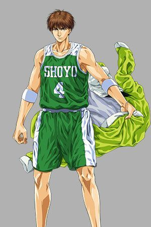
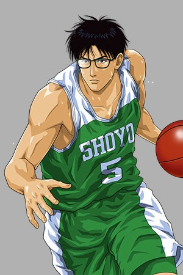
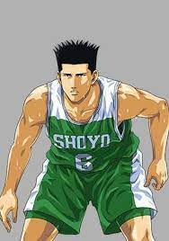
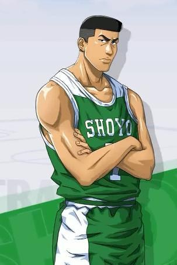
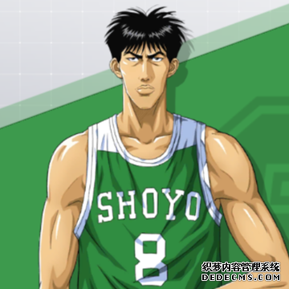

翔陽高中籃球隊的王牌，並身兼教練，個性冷酷而睿智，
擁有可以洞悉全場的觀察力，同時組織能力與三分球能力極為出色。

他是翔陽的明星球員， 縣內一流的中鋒，與魚住和赤木不同，他屬於柔性中鋒。
他在藤真不上場時，是場內的隊長和組織靈魂，擁有華麗的射籃技術和很好的防禦能力。藤真健司非常信任他。

翔陽高中籃球隊的前鋒。雖然在比賽中較不引人注目，
但是防守功力扎實並且讓三井的體力不堪負荷。

號碼：7號，打的位置為前鋒，身高有191cm，體重：84kg，三年級生。

號碼：8號，打的位置是大前鋒與中鋒，身高有193cm，體重：85kg，三年級生。
